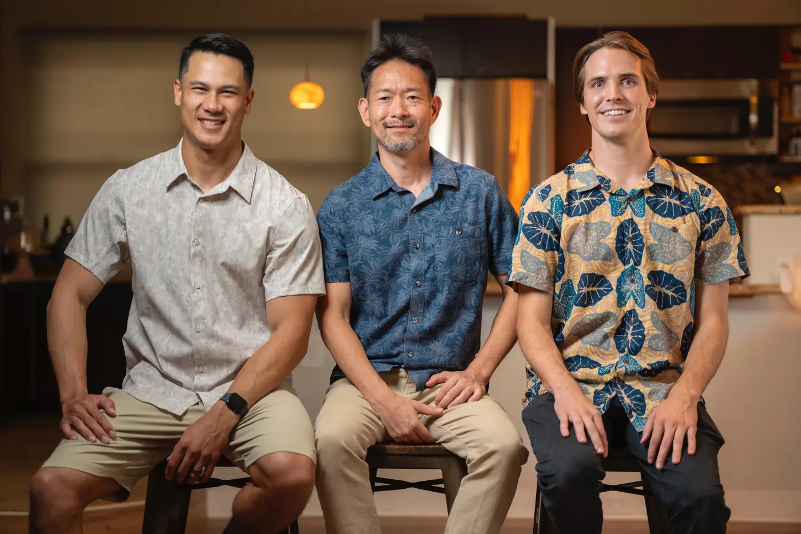

AI agents
From AI receptionists to AI personal assistants, we can tailor-make an AI agent to fit you or your business's needs.

Every week there's a new tool, a new headline, or a new way that “AI is changing everything.” The truth is: AI is big, but you don't need all of it. You just need the right parts that actually move the needle for your business.
Instead of a one-size-fits-all approach, we personalize AI to your company's real needs, whether that's automating repetitive tasks, building smarter customer experiences, or streamlining operations.
We start by understanding your business, your workflows, challenges, and goals, to identify where AI can create the most impact.
We build a tailored strategy, selecting the right AI tools and automations to fit your company, and create a step-by-step plan for implementation.
We roll out your AI solutions in clear, manageable steps, testing, refining, and integrating along the way so your team adopts the technology smoothly and confidently.
From AI receptionists to AI personal assistants, we can tailor-make an AI agent to fit you or your business's needs.
Automate your workflows with AI, streamlining everyday tasks so teams can focus on what matters most.
Our AI-powered dashboards turn scattered data into clear insights, helping you make smarter decisions, faster.
Three builds for Hawaiʻi organizations, told plainly: the problem, what we built, and what happened.
Affordable, tailored solutions so any business can harness AI without breaking the budget.
Begin with one simple AI solution and expand into many aspects of your business as you see results.
AI can feel complicated, but we handle the setup, integrations, and training so you don't have to.